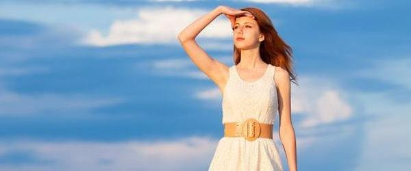

除了生活还有诗和远方

人生至少有两次冲动，一次为了奋不顾身的爱情，一次为了说走就走的旅行。
终于发现，我所拥有的，竟是如此繁华。一个人，才不会孤单。人生最好的旅行
，就是你在一个陌生的地方，发现一种久违的感动。有一种旅行，不为跋涉千里的向往，只为漫无目的的闲逛，
不为人 山人海的名胜，只为怡然自乐的街景。
关于旅行:
- 因为有梦，所以勇敢出发，选择出发，便只顾风雨兼程。
- 如果你不出去走走，你就会以为这就是世界。
- 当你下定决心准备出发时，最困难的时刻就已经过去了。那么，出发吧。
- 尼采说:
- 对待生命你不妨大胆点，因为它终将离你远去
首页 下一页